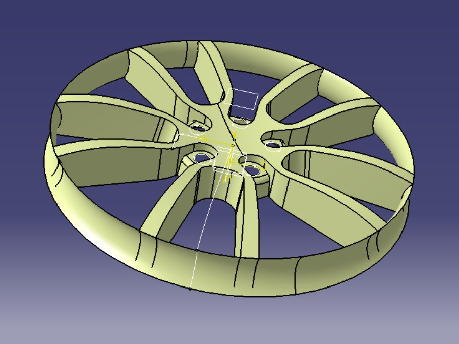
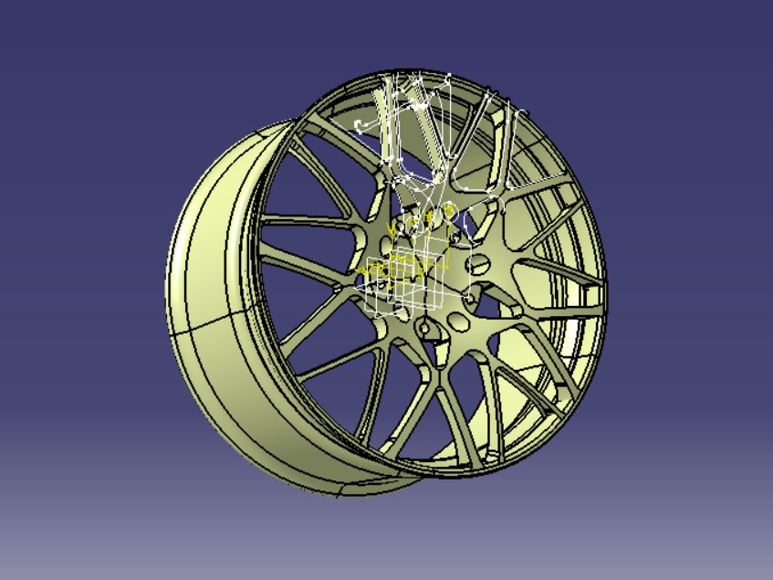
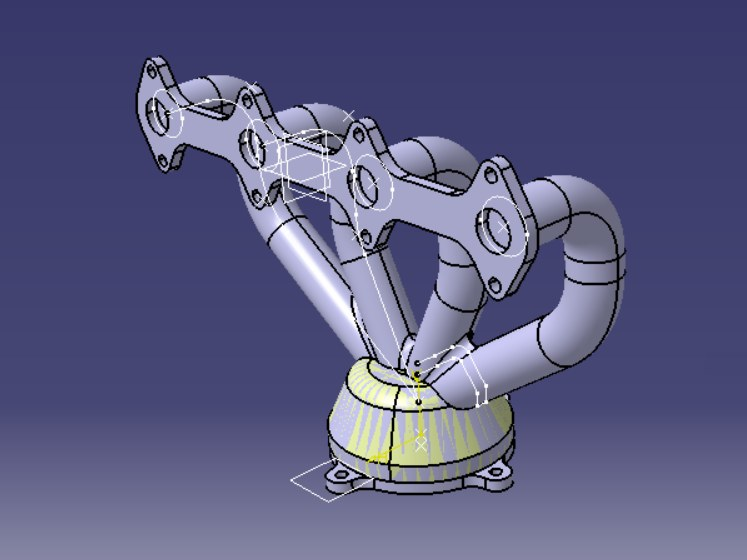
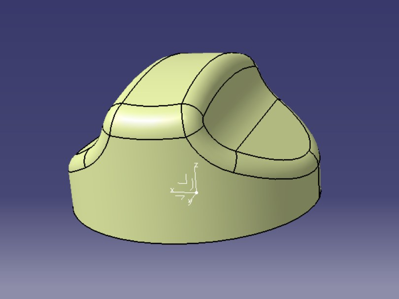
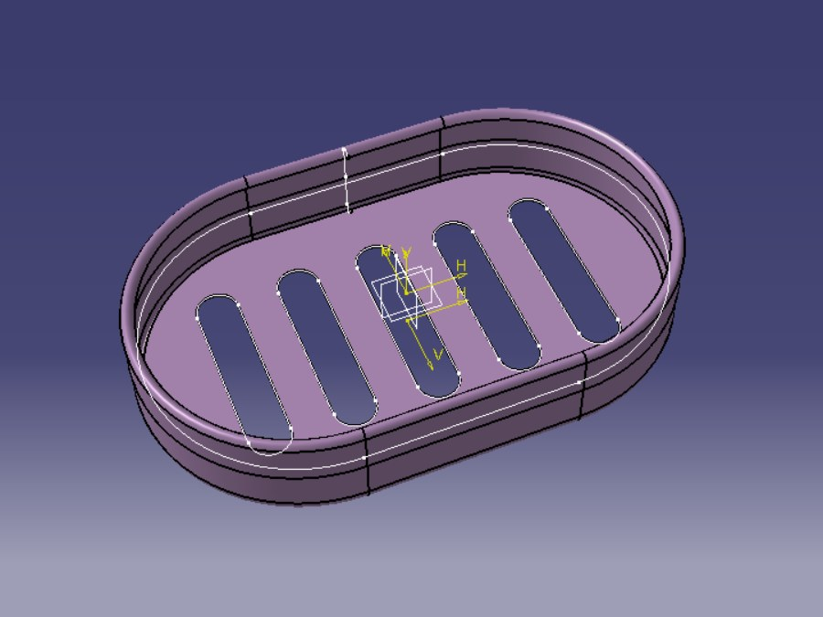

Overview
Seven parts modelled in CATIA V5 Generative Shape Design (GSD), the surface-modelling workbench used where solid features alone struggle: freeform product shells, cast alloy wheels, and exhaust runners that follow 3D paths and merge into one another.
Every part starts from a wireframe skeleton — sketches on reference planes, 3D guide curves, points and axis systems, many of them still visible in the screenshots below. Surfaces are then built on that skeleton and joined, trimmed and filleted into one clean shape, so the geometry stays controlled by a few curves rather than by the faces themselves.
Surfacing Workflow
The same sequence runs through every part:
Automotive — Alloy Wheels
Wheels are a classic surfacing case: a rim built from a profile turned about the wheel axis, and a spoke face whose sculpted spokes are designed once and repeated around the hub.
Open-spoke wheel

Wide, sculpted spokes run from a hub with lug holes out to the rim band, with deep pockets between them.
Split-spoke deep-dish wheel

A deep rim with a dense split-spoke face. The spoke sketch and reference planes are still shown on the face, revealing the construction behind it.
Automotive — Exhaust
Exhaust parts are tubes that bend in three dimensions and merge into each other. Each runner follows a 3D guide curve (the white lines in the screenshots), and the hard part is the transition where several tubes meet.
4-into-1 exhaust manifold

Four runners leave a flanged cylinder-head plate, follow their own 3D paths and converge into a collector that ends on a mounting flange.
2-into-1 down-pipe

Two pipes from a twin-port flange merge into a single outlet with a slotted end. The white spine curve that drives the sweep is visible along the pipe.
Consumer Products & Formed Parts
Product shells and formed parts call for smooth, continuous transitions between faces — the kind of shape that is quicker and cleaner to control as surfaces than as stacked solid features.
Ergonomic mouse shell

A domed top patched from several freeform faces — a raised ridge and a sloped palm area — closed onto a straight-walled base.
Soap dish

An oval tray with a lipped rim and five drainage slots cut through the floor.
Formed bracket with stiffening bead

A bent bracket with two fixing holes and a raised bead that follows the bends to stiffen them, with blend surfaces at the transitions.
✓ Project Outcomes
- Modelled seven freeform parts in CATIA V5 Generative Shape Design, across automotive (wheels, exhaust) and consumer products.
- Built every shape from a wireframe skeleton — sketches, reference planes, 3D guide curves and axis systems — so a few curves control the geometry.
- Swept tubular runners along 3D paths and merged them into a collector and a twin-port flange.
- Produced cast-wheel geometry: rims from turned profiles and spoke designs repeated around the hub.
- Assembled freeform faces into single clean shapes with join, trim, blend and fillet operations.